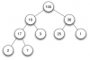
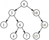

Le but de ce tutoriel est de vous faire découvrir toute la puissance des arbres binaires de recherche (souvent abrégé "ABR") par le biais de l'étude et de l'implémentation d'un algorithme de tri : le tri par ABR. Ce tri est un algorithme de tri simple, original et efficace. Moins connu que ses homologues tels que le tri par tas ou le tri fusion, il reste néanmoins un tri "rapide", avec une complexité au meilleur des cas et une complexité moyenne en O(n*log n). Il se base entièrement sur les propriétés des ABR.
Durant l'implémentation de ce tri, nous allons donc découvrir les algorithmes fondamentaux pour la manipulation des ABR. Tous n'entrent pas en jeu dans le tri par ABR, c'est pourquoi certains seront présentés à part.
Les arbres
Un arbre est une structure de données très particulière. Il en existe de différents types (notez que quand on parle d'arbre, on est encore dans le général). Cette structure de données a été inventé dans le but de représenter des données identiques liées. Chaque donnée est liée à aucune ou plusieurs autre(s) donnée(s) du même type. Il ne peut y avoir de "boucle", ce qui en fait une spécialisation des graphes. Certains l'auront compris : c'est une structure de données récursive.
Comme le nom l'indique, la structure de données de l'arbre peut être modélisée par un arbre dont chaque séparation représente un "noeud", autrement dit un élément de l'arbre. On utilisera la plupart du temps une représentation en arbre renversé mais ce n'est pas une généralité. Le premier élément est appelé "racine" de l'arbre. Chaque élément est appelé, comme dit, "noeud" de l'arbre. Les éléments terminaux, donc qui ne possèdent pas d'élements sous-jacents "fils", sont dits "feuilles".
Une définition plus "fonctionnelle" de l'arbre serait de considérer cette dernière structure de données comme un élément lié à zéro ou plusieurs sous-arbre(s) ou rien. On peut très facilement décrire ce type de structure, très utilisé, en nous servant de la BNF (Backus-Naur form). On obtient ainsi une définition rigoureuse et juste :
arbre ::= ε | elem (arbre)*
elem ::= int | char | float | bool | ...
Les arbres binaires
Un arbre est une structure de données encore assez générale. Nous pouvons spécialiser cette structure en définissant des règles d'organisation. Le nombre de fils éventuels de chaque élément peut-être une caractérisation d'un type d'arbre. Une liste chaînée est, par définition, un arbre dont chaque élément possède au plus un fils. Les arbres dont chaque élément possède au plus deux fils sont appelés arbre binaire. Il s'agit du type d'arbre le plus connu et le plus utilisé.
On retrouve les arbres binaires un peu partout. Grâce à leur puissance, ils sont utilisés par de nombreux algorithmes. L'une des spécialisations certainement la plus connue des arbres binaires est le tas (heap en anglais, image à droite). Nous n'allons pas approfondir cette notion ici. En deux mots, il s'agit simplement d'un arbre binaire suivant la règle suivante : chaque élément est inférieur à son parent. Le tas est utilisé dans l'algorithme du tri par tas, par exemple. La définition la plus intuitive de l'arbre binaire serait :
arbre ::= ε | elem (arbre) arbre
Les arbres binaires de recherche
Il n'y a pas que le tas. Une autre spécialisation de l'arbre binaire est également très connu : l'arbre binaire de recherche (ABR). Ce type d'arbre binaire permet une représentation structurée d'un ensemble d'éléments tout en permettant une recherche de valeur en complexité au meilleur des cas et en complexité moyenne logarithmique O(log(n)), pour n étant le nombre d'éléments de l'ABR. On utilise beaucoup ce type de structure en informatique.
L'arbre binaire de recherche est encore plus rigoureux qu'un tas dans sa définition, qui est la suivante : on considère un élément de l'arbre ; tous les éléments du sous-arbre gauche lui seront inférieurs tandis que tous les éléments du sous-arbre droit lui seront supérieurs. Le cas de l'égalité peut-être traité de la manière qui vous arrange le plus. Ce principe s'applique récursivement à chaque élément. Chaque sous-arbre est donc aussi un ABR. l'ABR permet donc une représentation plus "ordonnée" que le tas, ce qui fait toute la puissance de ce type d'arbre binaire.
Pour la recherche d'une valeur, vous y voyez déjà plus clair : il nous suffit d'effectuer un parcours récursif de l'arbre en commençant par la racine. Si la valeur recherchée est inférieure à la racine, alors elle est située dans le sous-arbre à gauche, sinon, elle est située dans le sous-arbre droit. En une comparaison, on élimine, dans le meilleur des cas et en moyenne, la moitié des valeurs. Nous allons détailler d'avantage cet algorithme par la suite.
Nous reviendrons sur les détails algorithmiques des opérations pouvant être effectuées sur les ABR par la suite. Le plus intéressant réside sans doute dans le fait qu'en parcourant un ABR en profondeur dans l'ordre infixe (arbre gauche -> élément en cours -> arbre droit), on récupère les éléments dans un ordre trié !
Le principe du tri par ABR est on ne peut plus simple. Si l'on sait créer ainsi que manipuler les arbres binaires de recherche, il est très intuitif : il vient tout seul. Nous pouvons décomposer l'algorithme en deux autres algorithmes sous-jacents : la construction d'un ABR à partir d'une suite d'éléments et le parcours en profondeur dans l'ordre infixe de cet ABR. Nous allons procéder très simplement : nous allons implémenter les différents algorithmes dans un langage fonctionnel : OCaml. Après ces implémentations, nous verrons comment assembler les différents morceaux pour former un tout : le tri par ABR. La "suite d'éléments" sera une liste.
Cette partie vous fait donc découvrir les algorithmes indispensables et récurrents quand l'on manipule les ABR (c'est le but). Les algorithmes qui n'entrent pas en action dans le tri par ABR seront présentés à la fin de cette sous-partie.
Le choix d'OCaml pour ce tutoriel n'est de loin pas un hasard. Étant un langage fonctionnel (un des plus connus), il permet de se concentrer essentiellement sur l'algorithmique d'un programme plutôt que sur ses détails trop techniques. De plus, même si vous ne programmez pas en OCaml, la sémantique vous en dit assez, ce qui vous permettra de traduire les codes donnés dans le langage de programmation de votre choix. OCaml est un langage élégant et si l'on s'y prend bien, il permet de produire des codes très concis. Afin de vous simplifier la compréhension encore d'avantage, les algorithmes seront décortiqués et les codes expliqués.
Définition d'un type : l'arbre binaire
La première étape de l'implémentation consiste à définir ce qu'est réellement un arbre binaire. Il faut expliquer à OCaml comment il doit structurer cela. À nous ensuite de lui appliquer des algorithmes pour faire de lui un ABR.
L'arbre binaire est un type récursif. En effet, chaque élément est lié à deux autres arbres (ou "sous-arbres"). On peut faire un parallèle avec l'arbre unaire, autrement dit la liste, qui se définit de cette manière : une liste est soit la liste vide [], soit un élément suivi d'une liste. La définition d'un arbre binaire vient donc par elle-même : un arbre binaire est soit rien (ε), soit un élément suivi par deux arbres binaires (c'est ce que nous avons vu avec les règles BNF).
type arbre =
| Vd | Nd of arbre * int * arbre
Deux choses : remarquez que j'ai choisi le type int (entier) en tant que type des éléments de l'arbre binaire. On aurait très bien pu en choisir un autre (n'importe quel type qui puisse se comparer). Un solution polymorphe est possible aussi, mais nous n'en parlerons pas ici. Ensuite, pour les abréviations, nous avons Vd pour "Vide" et Nd pour "noeud". Dans notre définition OCaml, qui est juste, un "Noeud" est donc un entier succédant un arbre et précédent un autre arbre.
Construire un ABR à partir d'une liste (insertions d'éléments dans un ABR)
Le premier algorithme fondamental à connaître sur les ABR est justement la construction d'un ABR à partir d'une liste. L'idée est d'itérer sur la liste en insérant chaque élément dans l'arbre binaire à sa bonne place de telle sorte que l'arbre binaire soit toujours un ABR.
L'algorithme d'insertion d'une valeur dans l'ABR est simple (on part de la racine de l'arbre). On possède une valeur v que l'on souhaiterait insérer dans l'ABR. Si l'élément en cours n'existe pas, on insère v à cet emplacement. Sinon, on compare v à l'élément en cours. S'il a une valeur supérieure, on l'insère dans le sous-arbre droit, sinon, on l'insère dans le sous-arbre gauche (récursivité). En appliquant cet algorithme à chaque élément de la liste (donc en insérant chaque élément dans l'ABR résultant de la précédente insertion), l'arbre binaire de recherche prend forme petit à petit. Cet algorithme récursif très simple permet donc de passer sans grands efforts d'une liste à un ABR !
let rec construire_arbre l =
let rec inserer v = function
| Vd -> Nd (Vd, v, Vd)
| Nd (fg, r, fd) ->
if v < r then Nd (inserer v fg, r, fd)
else Nd (fg, r, inserer v fd)
in match l with [] -> Vd
| t::q -> inserer t (construire_arbre q)
Avec l'explication précédente, ce code OCaml devient donc tout à fait logique. La fonction récursive construire_arbre itère sur la liste passée en paramètre et arrête les appels récursifs une fois qu'il ne reste plus que la liste vide [] (cela signifie que l'on est arrivé à la fin). Grâce à la pile d'appel, chaque élément est ensuite (donc seulement après !) inséré dans l'arbre binaire de recherche, dans l'ordre inverse. En effet, ici, le dernier élément de la liste est inséré en premier, il représentera la racine de l'ABR. Au final, la précédente fonction renverra donc un ABR contenant tous les éléments de la liste passée en paramètre.
Parcourir un ABR en profondeur
Une fois notre arbre binaire de recherche construit, nous allons devoir le parcourir de telle sorte qu'on récupère tous les éléments dans un ordre trié. Les règles d'organisation des ABR nous permettent justement de faire cela très facilement et ce grâce à la récursivité (encore une fois).
On ne vous demande pas de l'inventer, quoique que c'est logique : l'algorithme de parcours de l'ABR à utiliser ici est le parcours en profondeur dans l'ordre infixe. L'idée de cet algorithme est la suivante (on part de la racine) : On considère un élément. On parcourt le sous-arbre gauche, on récupère l'élément en cours, on parcourt le sous-arbre droit. "Infixe" signifie que l'on récupère l'élément en cours entre les deux "sous-parcours". On arrête les appels récursifs dès que l'arbre en cours vaut Vd (vide). Cet algorithme permet donc une récupération ordonnée des différents éléments. L'algorithme peut se reformuler simplement de la manière suivante : on récupère les éléments inférieurs à l'élément en cours, on récupère l'élément en cours, on récupère les éléments supérieurs (ou égaux) à l'élément en cours.
let rec parcourir = function
| Vd -> []
| Nd (fg, r, fd) -> (parcourir fg) @ r::(parcourir fd)
En OCaml, c'est très intuitif : on traduit simplement en code ce que l'on a écrit précédemment. Au final, la fonction récursive parcourir (qui prend en paramètre l'ABR) renvoie une liste de tous les éléments récupérés dans l'ordre de récupération, c'est à dire dans un ordre trié.
Assemblons les morceaux : le tri par ABR !
Nous sommes maintenant capable de créer un arbre binaire de recherche à partir d'une liste quelconque, même si cette dernière n'est pas triée. Nous savons aussi parcourir un ABR en temps linéaire en récupérant tous les éléments dans un ordre trié. L'idée du tri par ABR vient donc toute seule : on part d'une liste dans un ordre quelconque, on construit un ABR à partir de cette liste puis on récupère la liste triée à partir de l'ABR.
let tri_abr liste =
parcourir (construire_arbre liste)
En OCaml, il nous suffit de combiner les fonctions : on envoie à la fonction parcourir l'arbre binaire de recherche créé par la fonction construire_arbre à partir de la liste passée en paramètre de cette dernière fonction. Le retour de la fonction tri_abr est donc la liste triée. Le résultat est concluant :
# tri_abr [6; 7; 3; 2; 8; 1; 4; 0; 9; 5] ;;
- : int list = [0; 1; 2; 3; 4; 5; 6; 7; 8; 9]
Autres algorithmes
Certains algorithmes fondamentaux dans la manipulation des arbres binaires de recherche n'apparaissent pas dans le tri par ABR. Comme je souhaite tout de même vous en présenter quelques uns, je les détaille à part ici. Je complèterai au fur et à mesure.
La recherche d'un élément dans un arbre binaire est un procédé récursif très simple. Il fonctionne à peu près comme l'insertion d'un élément : par éliminations d'un sous-arbre à chaque appel récursif. La plupart des algorithmes de recherche de ce type renvoient un booléen nous informant si la valeur est contenue dans l'ABR ou non. Dans notre exemple, nous allons renvoyer une liste. Cette liste stocke le chemin à suivre en partant de la racine pour atteindre l'élément recherché. Nous utiliserons une liste de char. Pour cette construction du "chemin", nous devons distinguer deux cas : soit on va à gauche (c'est à dire dans le sous-arbre gauche), soit on va à droite. On modélise ceci respectivement avec les lettres 'g' et 'd'. Voilà comment nous allons procéder (on part de la racine) : on compare l'élément recherché à l'élément en cours. Si il y a égalité, on renvoie la liste vide [] (on ne va ni à gauche, ni à droite). Si l'élément recherché est inférieur, on "va" à droite (on renvoie donc 'd' suivi de l'appel récursif de la fonction de recherche sur le sous-arbre droit), sinon, on renvoie 'g' suivi de l'appel récursif de la fonction de recherche sur le sous-arbre gauche. Si l'on tombe sur l'arbre vide Vd, c'est que l'élément recherché n'est pas dans l'ABR, on finalise donc la liste avec 'f'::[].
let rec search n = function
| Vd -> 'f'::[]
| Nd (fg, r, fd) ->
if n = r then []
else if n < r then 'g'::search n fg
else 'd'::search n fd
Le résultat final est amusant : on obtient une suite de caractère nous permettant de parcourir l'ABR et de retrouver la valeur recherchée.
La complexité d'un algorithme évalue son nombre d'opérations en fonction de la taille de l'entrée. Dans le cas d'un algorithme de tri, la taille de l'entrée est la taille de la structure à trier (n éléments, par exemple). Les meilleurs algorithmes de tri font en moyenne (ou tout le temps) n*log(n) opérations. On utilisera la notation de Landau, c'est à dire O(n*log(n)). D'une manière générale, la complexité nous donne une idée sur les performances d'un algorithme et sur l'évolution de ces dernières en fonction de la taille de l'entrée.
Construction d'un ABR à partir d'une liste (insertions d'éléments dans un ABR)
La construction d'un ABR à partir d'une liste est le résultat de l'application de l'algorithme d'insertion d'une valeur dans un ABR à chaque élément de la liste. Il faut donc d'abord se pencher sur cet algorithme d'insertion. Réfléchissons. On suppose que dans le meilleur cas et en moyenne, on élimine une moitié d'arbre à chaque comparaison jusqu'à tomber sur un emplacement libre. Pour simplifier, on va dire que l'arbre comporte autant de nœuds que d'éléments à insérer. Si l'on élimine à chaque itération la moitié des valeurs de l'arbre, on doit se poser la question : combien de fois doit-on diviser n par deux jusqu'à tomber sur 1 ? Il s'agit d'une fonction : la fonction logarithme (en base 2 ici). L'algorithme d'insertion est donc en O(log(n)) (on dit qu'il s'agit d'une complexité logarithmique). Pour insérer chaque élément dans l'arbre, on a donc logiquement du O(n*log(n)). On parle d'une complexité quasi-linéaire. Dans le pire des cas, l'arbre est totalement balancé d'un coté et on obtient une liste chaînée. Pour l'insertion, cela impose donc un parcours de tous les éléments et une complexité pour l'insertion en O(n). La construction de l'ABR se fera donc en O(n²), appelée complexité quadratique.
Parcours en profondeur d'un ABR
Ici, c'est assez simple. Avec un parcours en profondeur, on visite chaque élément de l'arbre une et une seule fois. L'algorithme est donc en O(n) s'il y a n éléments composant l'ABR. D'ailleurs, sur n'importe quel arbre, un parcours en profondeur sera toujours en O(n). On parle cette fois-ci d'une complexité linéaire. Il n'y a pas de pire des cas.
Le tri par ABR
Le tri par ABR est de le résultat de la combinaison entre l'algorithme de construction d'un ABR à partir d'une liste dans un ordre quelconque et l'algorithme du parcours en profondeur infixe (récupérant les valeurs dans un ordre trié). Les deux algorithmes se succédant, on obtient une complexité globale qui est la somme de la complexité des deux algorithmes. On a donc à peu près du O(n*log(n) + n), ce que l'on simplifie en O(n*log(n)). Dans le monde des algorithmes du tri basés sur les comparaisons, on ne peut pas faire mieux. La complexité quasi-linéaire est donc une complexité optimale et le tri par ABR possède cette complexité en moyenne et dans le meilleur des cas. Dans le pire des cas, on a du O(n²+n) ou tout simplement du O(n²), il ne devient alors guère mieux qu'un tri par sélection. By the way, on évitera d'utiliser le tri par ABR en pratique parce qu'il a une complexité mémoire en O(n) (le tri par tas, quant à lui, peut être implémenté en place).
La recherche d'un élément dans un ABR
Pour cet algorithme de recherche, on va pouvoir se baser sur ce qui a été dit sur l'algorithme d'insertion d'un élément dans un ABR. L'idée de cet algorithme-ci est de comparer l'élément cherché à l'élément en cours. On distingue quatre cas possibles : soit l'élément est plus petit (on appelle récursivement la fonction de recherche sur le sous-arbre gauche), soit l'élément est égal (on renvoie true), soit l'élément est plus grand (on appelle récursivement la fonction de recherche sur le sous-arbre droit) ou soit l'élément en cours n'existe pas (on renvoie false). Encore une fois, on élimine, en moyenne et dans le meilleur des cas, la moitié des valeurs. On a donc un algorithme en O(log(n)). Dans le pire des cas, c'est comme pour l'insertion, on se retrouve avec du O(n).
C'est déjà fini. Comme vous avez pu le constater, les arbres binaires de recherche sont des arbres très puissants, permettant un stockage ordonné et logique des données. Cette structure permet l'application d'algorithme souvent en complexité logarithmique (insertion, recherche, etc.), ce que ne permettent pas les tableaux par exemple. De plus, cette structure permet la réalisation d'un tri quasi-intuitif et en O(n*log n) au meilleur des cas et en complexité moyenne : le tri par ABR.
Il est possible d'obtenir un tri en O(n*log n) dans tous les cas. Nous avons vu que le tri par ABR est quadratique (en O(n²)) dans le pire des cas, quand l'entrée est déjà triée. Cela vient du fait que l'arbre est alors en peigne. La solution à ce problème pourrait être la suivante : appliquer un équilibrage de l'arbre à chaque insertion, à l'aide des algorithmes de rotation. Je vous recommande chaudement de lire les articles suivants : Les arbres AVL et les arbres rouge-noir.
Je remercie Xavinou et Xeroth pour leur relecture attentive ainsi que tous ceux qui ont participé à l'amélioration du tutoriel.
ShareMan
{kind=link}
{kind=link}